Data visualization in R
- R contains many packages for data visualization
- This means that you can usually create the visualization you need, but you may have to sort through packages sometimes
- Fortunately, there are a few basic and powerful graphics packages
- We’ll look at
graphics (included in R) and ggplot2
The graphics package: scatterplots
- R contains a number of easy, built-in functions for graphics
- The simplest is the scatterplot
x <- seq(from = -10, to = 10, length.out = 100)
y <- x^2
plot(x, y)
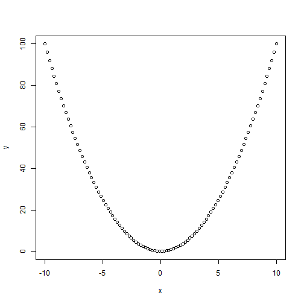
Drawing a curve
plot(x, y, type = "l")
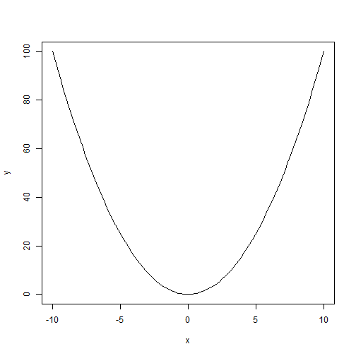
Adding labels
plot(x, y, type = "l", col = "blue", ylab = "x^2")
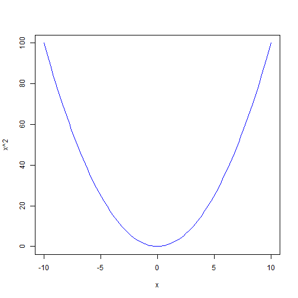
Adding back the points
plot(x, y, type = "l", col = "blue", ylab = "x^2")
points(x, y, col = "red")
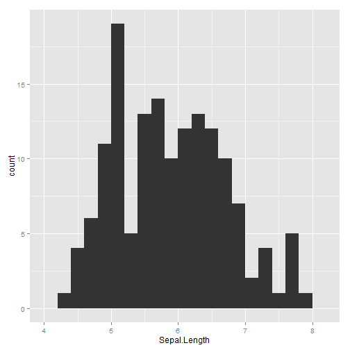
Some real data
head(iris)
## Sepal.Length Sepal.Width Petal.Length Petal.Width Species
## 1 5.1 3.5 1.4 0.2 setosa
## 2 4.9 3.0 1.4 0.2 setosa
## 3 4.7 3.2 1.3 0.2 setosa
## 4 4.6 3.1 1.5 0.2 setosa
## 5 5.0 3.6 1.4 0.2 setosa
## 6 5.4 3.9 1.7 0.4 setosa
The graphics package: boxplots
boxplot(Petal.Length ~ Species, iris)
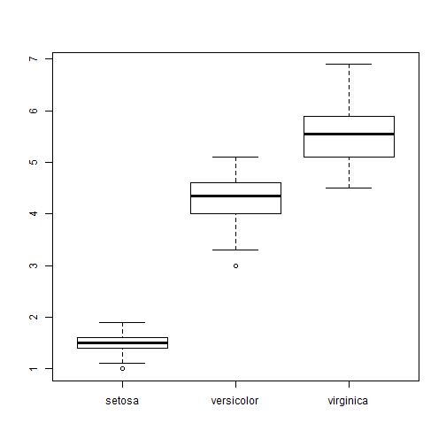
The graphics package: bar graphs
barplot(1:3, col = c("red3", "darkgreen", "navyblue"))
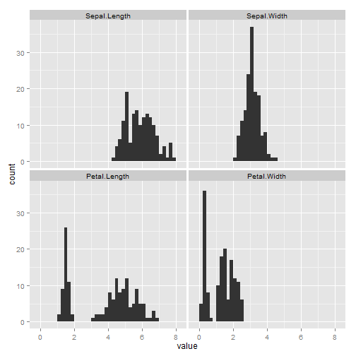
ggplot2
- The
ggplot2 library provides an object-oriented, data-centered approach to graphics
- It also produces better-looking graphics by default!
- On the other hand, it takes a bit more work to understand
Scatterplot
library(ggplot2)
qplot(Petal.Length, Petal.Width, data = iris)
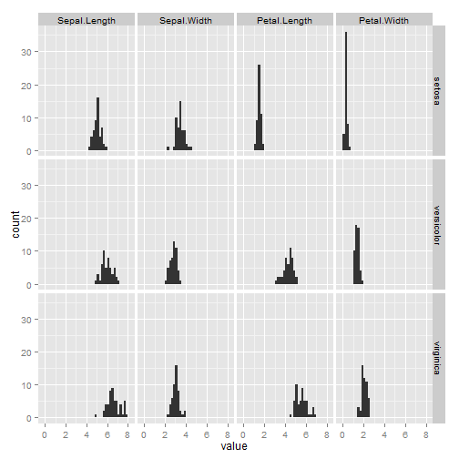
Adding more dimensions using color
qplot(Petal.Length, Petal.Width, color = Species, data = iris)
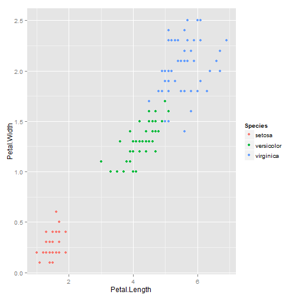
Adding more dimensions using faceting
qplot(Petal.Length, Petal.Width, data = iris) + facet_wrap(~Species)
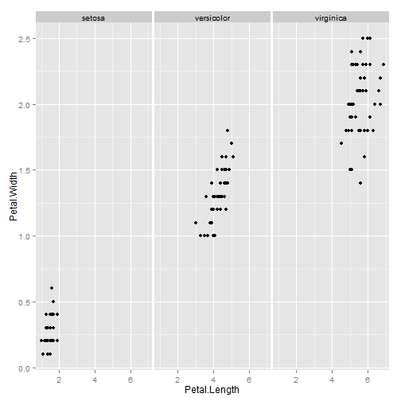
Adding another “geom”
qplot(Petal.Length, Petal.Width, color = Species, data = iris) + geom_rug()
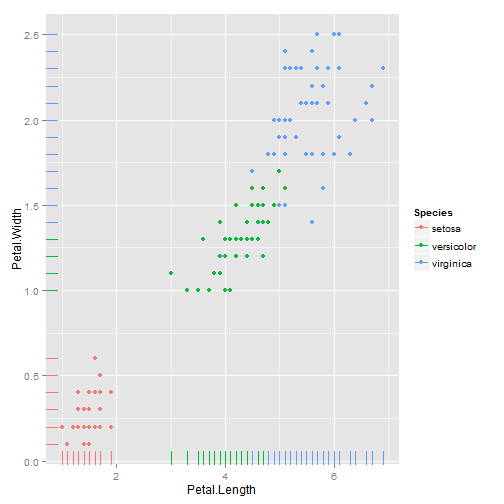
Adding labels
qplot(Petal.Length, Petal.Width, color = Species, data = iris) + geom_rug() +
xlab("Petal Length") + ylab("Petal Width") + ggtitle("My Plot")
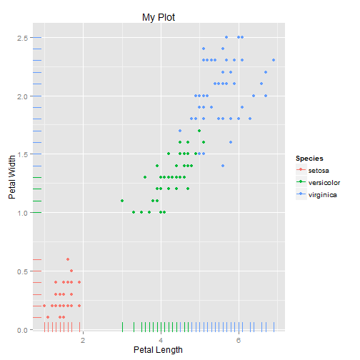
Computing statistics: linear regression
qplot(Petal.Length, Petal.Width, color = Species, data = iris) + geom_rug() +
stat_smooth(method = lm) + xlab("Petal Length") + ylab("Petal Width") +
ggtitle("My Plot")
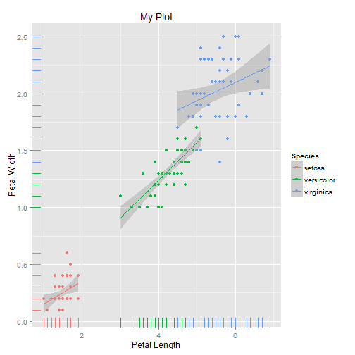
Computing statistics: linear regression
qplot(Petal.Length, Petal.Width, color = Species, data = iris) + geom_rug() +
stat_smooth(aes(group = 0), method = lm) + xlab("Petal Length") + ylab("Petal Width") +
ggtitle("My Plot")
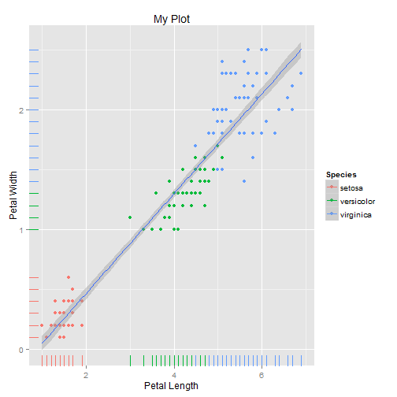
Computing statistics: 2D kernel density
qplot(Petal.Length, Petal.Width, color = Species, data = iris) + geom_rug() +
geom_density2d() + xlab("Petal Length") + ylab("Petal Width") + ggtitle("My Plot")
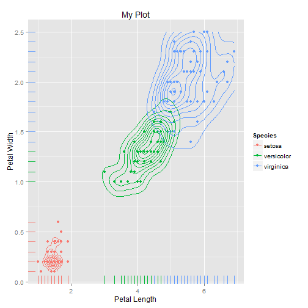
Another syntax
ggplot(iris, aes(Petal.Length, Petal.Width, color = Species)) + geom_point()
Box plots
qplot(Species, Petal.Length, data = iris, geom = "boxplot")
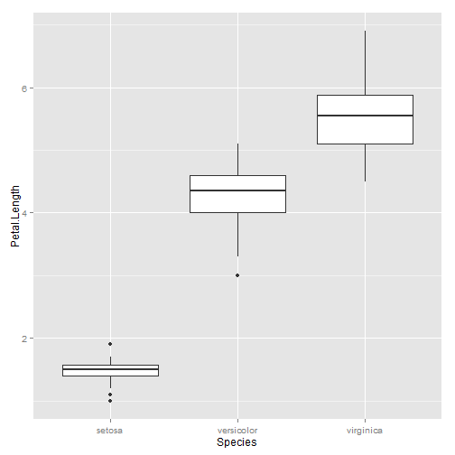
Histograms
ggplot(iris, aes(Petal.Length)) + geom_histogram(binwidth = 0.2) + facet_wrap(~Species,
ncol = 1)
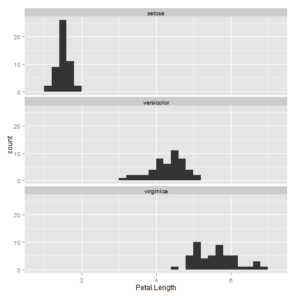